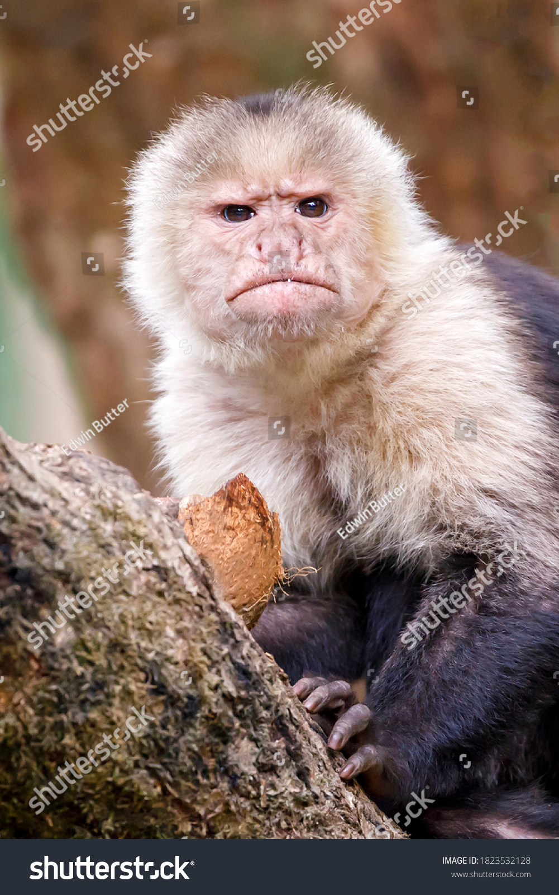
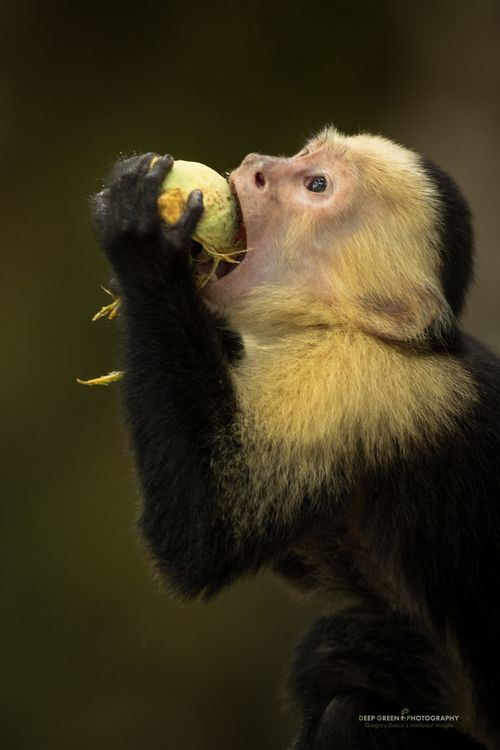

Обыкновенный капуцин

Обыкновенный капуцин на дереве (недоволен).
Научная классификация:
- Домен: Эукариоты
- Царство: Животные
- Тип: Хордовые
- Класс: Млекопитающие
- Отряд: Приматы
- Семейство: Цепкохвостые обезьяны
- Род: Капуцины
- Вид: Обыкновенный капуцин

Обыкновенный
капуцин ест.
(доволен)
Поведение:
- Питаются:
- Фрукты
- Насекомые
- Цветы
- Ростки
- Живут в:
Личное мнение:
Я считаю, что Обыкновенный капуцин очень крутая обезьяна по следующим причинам:
- Очень недовольный
- Очень плоский
- Очень крутой
Могу чуть точнее выразить свои чувства к Обыкновенному капуцину в следующей таблице: